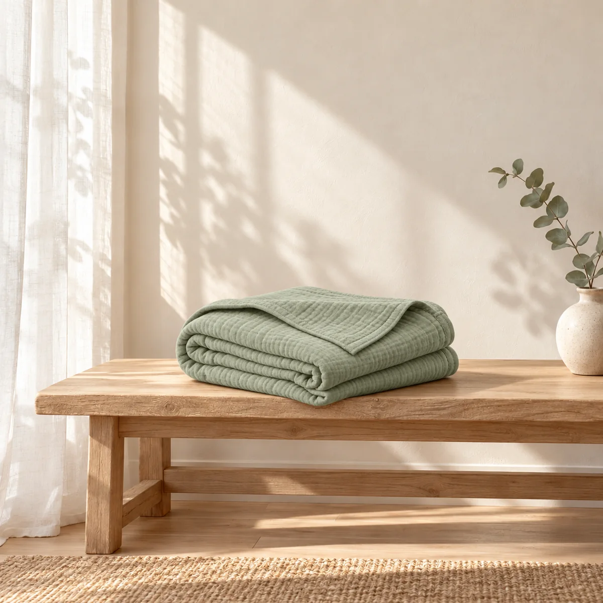
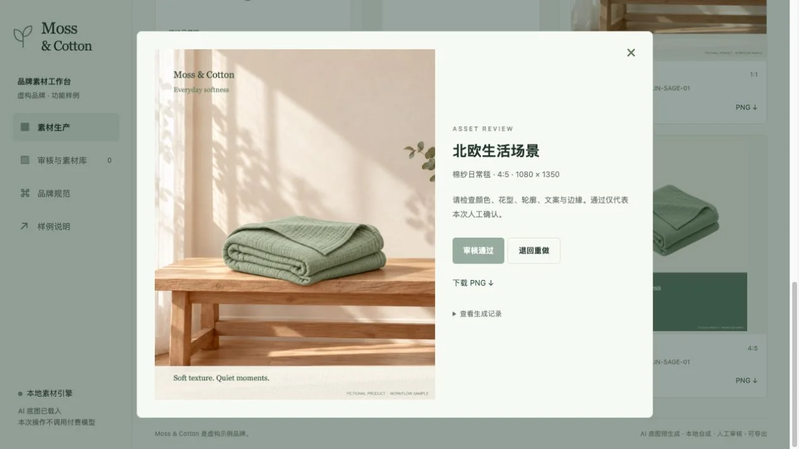

01 / PRODUCT
白底商品图
原图保留
统一画布与信息
母婴纺织品 · 可交互工程样例
输入一件产品，复用品牌模板，
生成多尺寸图片，审核后统一交付。
再把通过的素材，剪成一支短片。
Moss & Cotton 为虚构品牌，产品及场景由 AI 生成。
这里展示的是本次小样的实际文件与操作流程。

ONE PRODUCT / THREE FORMATS
白底、生活场景和社媒卡片，
分别输出 1:1 与 4:5 两种尺寸。
点击图片可查看大图、下载 PNG。
原图保留
统一画布与信息
参考原图生成
品牌文案排版
品牌色与字体
文案确定性排版
商品外观、颜色、折叠形态和文字仍需人工核对。示例不代表真实商品拍摄或渠道审核通过。
下载完整素材包 约 18 MBA REVIEWABLE WORKFLOW
将重复的准备工作交给模板，
把需要判断的部分留在审核里。
名称、SKU、文案与原图。
支持替换自己的产品图片。
品牌名、系列、主色与约束，
保存为当前配置版本。
选择模板和比例，
在浏览器中实际合成 PNG。
预览、通过或退回，
记录原因并重新合成。
通过的图片制作动效短片，
文件与记录一并打包。
Moss & Cotton / 品牌素材工作台

THREE SHOTS / FIFTEEN SECONDS
复用白底图、场景图和品牌卡片，
以轻微推近剪成 9:16 竖版视频。
这是图片动效剪辑，未调用生成式视频模型。工作台可基于通过审核的图片重新制作。
ENGINEERING SCOPE
已有真实产出与可运行流程，
正式接入继续围绕业务要求推进。
页面状态保存在当前标签页内，刷新会清空。GitHub Pages 中的图片处理在浏览器内完成，上传的产品图不会发往第三方模型服务。
RELATED ENGINEERING EXPERIENCE
汇千流 LedgerAsk 围绕贸易单据处理、知识检索、Agent 任务和系统对接展开；Jev LongSeq 探索浏览器任务执行、过程记录与结果验证。
TRY THE WORKFLOW
无需登录即可体验。可用虚构示例，
也可以上传自己的透明背景产品图。